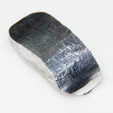

Indio (In)
Informazioni sull'Indio
- Nome elemento:
- Indio
- Simbolo:
- In
- Appartenenza al gruppo:
- 13
- Numero atomico:
- 49
Il numero atomico dell'indio è 49.
- Massa atomica:
- ~115 u
La massa atomica dell'indio è circa 115 u.
- Numero di isotopi:
- 30 (di cui solo 2 sono stabili)
- Temperatura di fusione:
- ~157 °C
La temperatura di fusione dell'indio è circa 157 °C.
- Temperatura di ebollizione:
- 2072 °C
La temperatura di ebollizione dell'indio è 2072 °C.
- Densità:
- 7,31 g/cm³
La densità dell'indio è 7,31 g/cm³.
- Elettronegatività:
- 1,78 (Scala di Pauling)
L'elettronegatività dell'indio è 1,78 sulla scala di Pauling.
- Anno di scoperta:
- 1863, dal chimico tedesco Ferdinand Reich
L'indio fu scoperto nel 1863 dal chimico tedesco Ferdinand Reich.
- Caratteristiche:
-
- Relativamente resistente all’ossidazione.
- Utilizzato in elettronica per la produzione di schermi.
- Principali Paesi Produttori:
-
- Cina
- Giappone
- Corea del Sud
- Tanzania
- Perù
- Bolivia
- Effetti sulla Salute:
-
- L’indio è **relativamente non tossico**, ma l’esposizione ad alte concentrazioni può comportare rischi.
- **Effetti tossici** possono includere danni ai polmoni e al sistema nervoso.
- Effetti sull'Ambiente:
-
- L’indio può contaminare il suolo e le risorse idriche.
- È considerato tossico per alcuni organismi acquatici.
